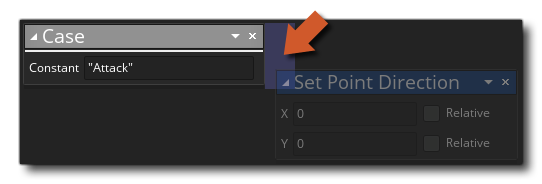

Diese Aktion erstellt einen neuen Fall innerhalb eines Switch. Sie geben den Wert für den Fall an und er wird mit dem Eingabewert für den Switch verglichen, und wenn sie übereinstimmen, werden die unter dem Case hinzugefügten Aktionen ausgeführt. Aktionen, die einem Fall hinzugefügt werden, der nur in diesem Fall ausgeführt werden soll, sollten an die Seite der Aktion fallen, ähnlich wie Sie einem "if" eine Aktion hinzufügen würden: 
Beachten Sie, dass ein Case-Wert eine Konstante sein muss, die ein beliebiger Datentyp sein kann (real, string, etc...), solange bei der Kompilierung ein einzelner Wert ausgewertet wird - Sie können also keine Ausdrücke verwenden, die von Variablen abhängen. Beachten Sie auch, dass Case nicht außerhalb eines Switch verwendet werden kann. Wenn Sie dies versuchen, erhalten Sie einen Fehler.
Streit Beschreibung Constant Der konstante Wert, der für den Switch-Eingangswert ausgewertet wird
Der obige Aktionsblockcode ruft den in einer Variablen gespeicherten Wert ab und vergleicht ihn dann mit den verschiedenen möglichen Fällen. Wenn einer der Fälle derselbe wie der Wert ist, wird die Aktion in diesem Fall ausgeführt, andernfalls wird der nächste Fall ausgewertet. Nachdem der Schalter ausgeführt wurde, wird ein Alarm auf 30 gesetzt.